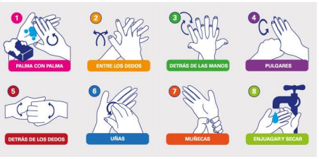
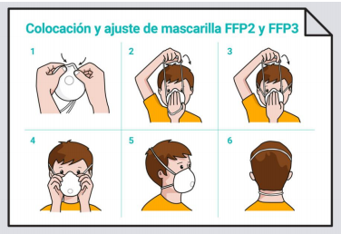
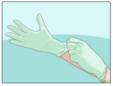
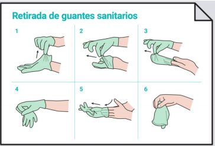
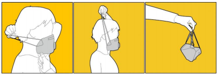

recomienda el uso de equipos de protección personal (EPP) para cada procedimiento realizado a un paciente COVID-19 positivo o con sospecha de COVID-19.
EQUIPOS DE PROTECCIÓN PERSONAL (EPP) COVID-19
● SECUENCIA PARA UTILIZAR EL EPP
- Se deberealizar el lavado de manos después de desechar la mascarilla o respirador.

- Colocacion de mascarilla
Sólo se utilizará en caso de contacto directo con personas a menos de 2 metros de distancia, de acuerdo con las recomendaciones del Ministerio de Sanidad.

- Colocacion de guantes
Extiende bien los guantes para que cubran las manos. Mantén las manos alejadas de la cara. Limita el contacto con superficies. Cambia los guantes si se rompen.

● SECUENCIA PARA RETIRAR EL EPP
- Retirada de guantes
¡El exterior de los guantes está contaminado! Agarra la parte exterior del guante, dando un pequeño pellizco con la otra mano y quítatelo. Sostén con la mano enguantada el guante que te has quitado. Desliza los dedos de la mano sin guante, a la altura de la muñeca, por debajo del guante que aún no te has quitado. Quítate este guante cubriendo el primero.

- Se deberealizar el lavado de manos después de desechar la mascarilla o respirador.
- Retirada de mascarilla
Retira la mascarilla si ha habido que utilizarla por haber estado en contacto con personas a menos de 2 metros, no toques la parte delantera de la misma, puede estar contaminada. Primero, con una mano agarra la parte de abajo metiendo un dedo por el interior de la mascarilla ya que la parte de dentro no está contaminada, luego agarra las banda elásticas por detrás de la cabeza y, por último, quítatela deslizando las bandas por delante de la cara. Deposita la mascarilla en una bolsa de plástico, ciérrala bien con un nudo y ésta en una bolsa de desechos.

- Vuelve a hacer el lavado higienico de manos